見透し面設定
外板部材(シートボディ、板部材)に工作属性として”見透し面”を設定します。この属性は外板部材の外板展開図を作成する際に適用されます。一つの部材にいくつでも複数設定することができます。
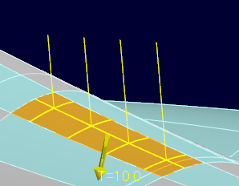 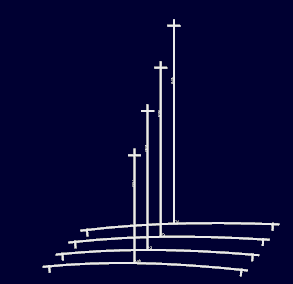
操作方法
見透し面を設定する部材を選択、見透し面のパラメーターを設定し、ＯＫボタンで確定します。付加された属性のシンボル（曲げ型）が表示されます。
属性を削除する場合は通常の要素と同様、属性要素を削除します。
シートボディに設定した場合はシートボディに板厚属性も設定されます。
パラメータ
- 設定の確認
確認ボタンを押すと、現在の設定状況をグラフィックウィンドウ上でプレビュー表示します。
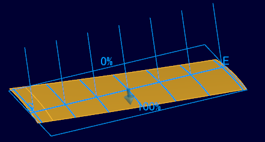
- 対象要素

見透し面を設定する外板部材(シートボディ、板部材(ソリッド))を選択します。
シートボディを選択した場合は板厚方向,板厚を設定します。 - 名前
見透し面の名前を設定します。外板展開図面上の見透し線上のこの名前が表示されます。
- 見透し面設定
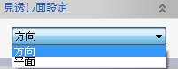
見透し面を面上の見透し線の方向、または平面を指定することで設定します。
- 方向
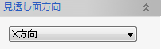
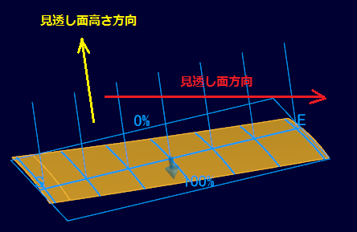
見透し平面の法線方向はこのここで指定する方向と見透し面高さ方向(設定されない場合は自動計算)から決定します。
- 平面
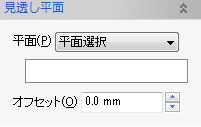
見透し平面を平面を選択することで設定をします。
- 方向
- 見透し面高さ方向
見透し平面の高さ方向を指定します。
- デフォルト
システムが部材が一番平らに見える方向を計算して決定します。曲げ型はすべて平行でこの方向が高さ方向になります。
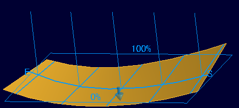
- 法線方向
システムが部材が一番平らに見える方向を計算して決定しますが、曲げ型は見透し平面上での外板の法線方向にたてます。
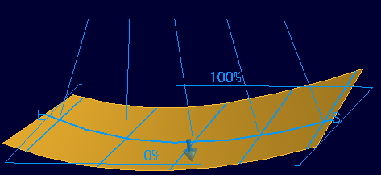
- 指定方向
方向を３次元空間上で指定します。曲げ型はすべて平行でこの方向が高さ方向になります。
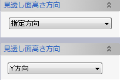
見透し平面の高さ方向を指定します。設定されない場合は見透し面の高さ方向はシステムが部材が一番平らに見える方向を計算して決定します。
- デフォルト
- 見透し位置
見透し位置をmmで設定します。(一番短くなる位置での長さです。)
- 最大高さ
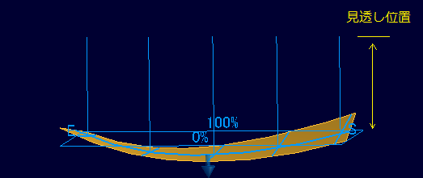
一番短くなる位置での見透し位置の長さを指定します。
- 両端の高さ
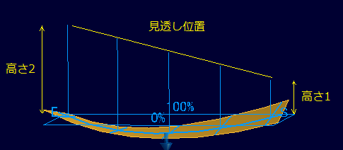
始点側(高さ1)、終点側(高さ2)の両端の位置での長さを指定します。
- 最大高さ
- 見透し面位置調整
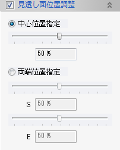
見透し面を方向で設定した場合は見透し面の位置をここで調整することができます。中心位置を指定して全体に移動したり、両端位置を設定して傾けることができます。0-100%の方向や端部の位置S,Eは設定の確認でプレビュー表示されます。
- 曲げ型位置
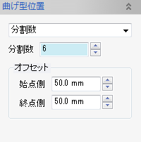 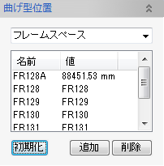
曲げ型の位置を見通し線上での分割数もしくはフレームスペース、バトックライン、ウォータラインのいずれかで指定します。
- 分割数
分割数で指定した場合は曲げ型をとる平面の法線は見透し面の法線方向と見透し面高さ方向で決定します。見透し線上で、始点側、終点側のオフセットと、その間の分割数で決定をします。
- フレームスペース、バトックライン、ウォータライン
ここで設定する場合は曲げ型をとる平面の法線はそれぞれ、Ｘ，Ｙ，Ｚ方向になります。初期化ボタンで現在の見透し線からシステムが位置を決定します。システムのフレームスペース、バトックライン、ウォータラインの設定を利用します。追加、削除ボタンで位置を追加、削除でき、それぞれ位置の名前や値をリスト上の該当位置（セル）をクリックすることで編集することができます。
- 分割数